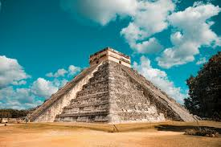
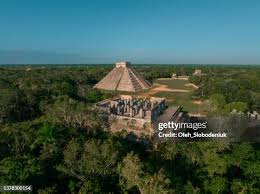
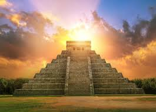

Chichén Itzá 🏛️
Chichén Itzá is an ancient Mayan archaeological site, renowned for its impressive temples, pyramids, and advanced urban planning. It served as a major political and economic hub between the 9th and 12th centuries.
"Chichén Itzá stands as a timeless testament to Mayan brilliance in science, architecture, and culture."
Gallery 🏛️



